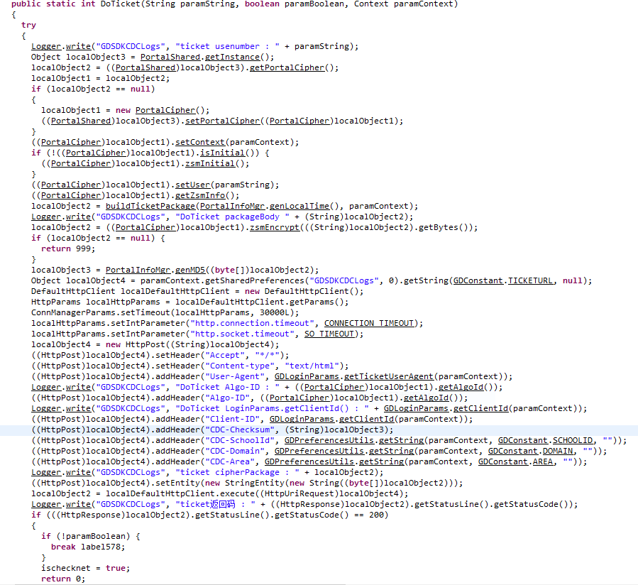

本文同时发表于知乎专栏：https://zhuanlan.zhihu.com/p/26120989
背景
GitHub 搜索得知，2015、2016 年已有学生写过模拟天翼客户端登录校园网的代码，然而逐一试过后发现没有一个可用的（。浏览这些 repo 后发现电信曾对认证算法进行过多次更新，但至少在 2016 年 10 月前都是采用 CHAP 协议进行认证。2016 年 10 月后，电信再次更新算法，原先的 challenge + login + heartbeat 模式似乎不好用了，POST challenge 会返回 spec is in black list。
尝试对 PC 和安卓客户端抓包未果后（其实是有果的，但是数据包的数据都是哈希过的，无从得知原文），我决定对安卓「掌上大学」客户端进行逆向。
工具
dex2jar（apk 反编译为 jar）
JD-GUI（Java 反编译器）
过程
首先从这里下载安卓客户端 apk，并准备好工具解压，然后运行
|
|
其中 APKPATH 为客户端 apk 路径，Windows 下操作需要在 d2j-dex2jar 后加 .bat。
运行 JD-GUI，将反编译出的 .jar 文件拖进去，就可以看到反编译的 Java 代码了。
想到安卓客户端登录时会显示「通讯中，请稍后」（原文如此）字样，直接在代码中搜索该字符串，很容易定位到少数几个类，并且显然（。） GDLoginActivity.class 对我们很有用。
|
|
转到 GDLoginUtils.class，该类中有几个方法名引人注目：DoTicket()、DoLogin()、DoPcLogin()，这些方法又分别调用了一些 BuildXXXPackage() 的方法，目测是用来构造要发送的数据的，Ticket 的包需要发送 MAC 地址、Hostname、UA、ClientId、客户端 IPv4 地址、客户端 IPv6 地址、客户端运行平台、当前时间戳，Login 的包则要发送 UA、ClientId、用户名、密码、verify（验证码？）、ticket、当前时间戳。构造完这些数据后，在 DoXX() 方法中又调用了名为 zsmEncrypt() 的某种神秘加密算法加密，最后再计算加密结果的 MD5 值，并将该值写进 HTTP 请求头部的 CDC-Checksum field 中，和其他一些信息（如学校 ID）一起 POST 到电信服务器上。
至此，联系抓包看到的请求（/ticket.cgi、/auth.cgi、/keep.cgi）我们可以猜想：原来的 challenge + login + heartbeat 模式，相当于现在的 ticket + auth + keep 模式。
IP 地址、MAC、UA、甚至 HTTP 请求里的学校 ID 这些信息都不难自己写代码构造，难的是经过那个神秘加密算法加密后的内容，如果不了解这个算法，我们就构造不出来了。
Google 搜索「libzsm.so」（代码中有该字符串），找到看雪大神的一篇文章：【原创】记掌上大学天翼校园的逆向分析 - 看雪安全论坛，看完后，我就放弃了继续逆向的想法。
你问我为啥？我不会反汇编 Linux 的动态链接库（微笑）。
最后，放张反编译后的部分代码图吧。
